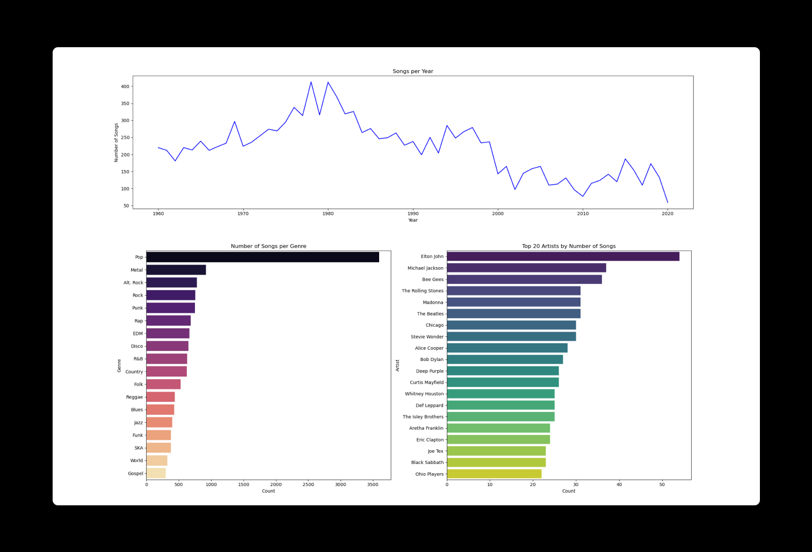
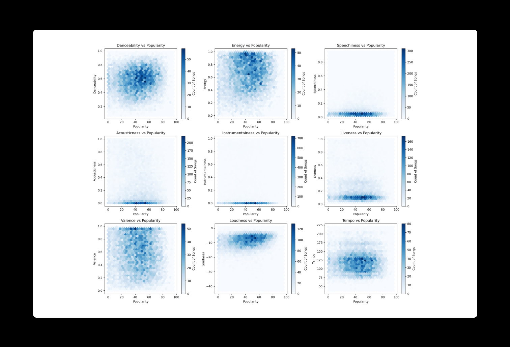
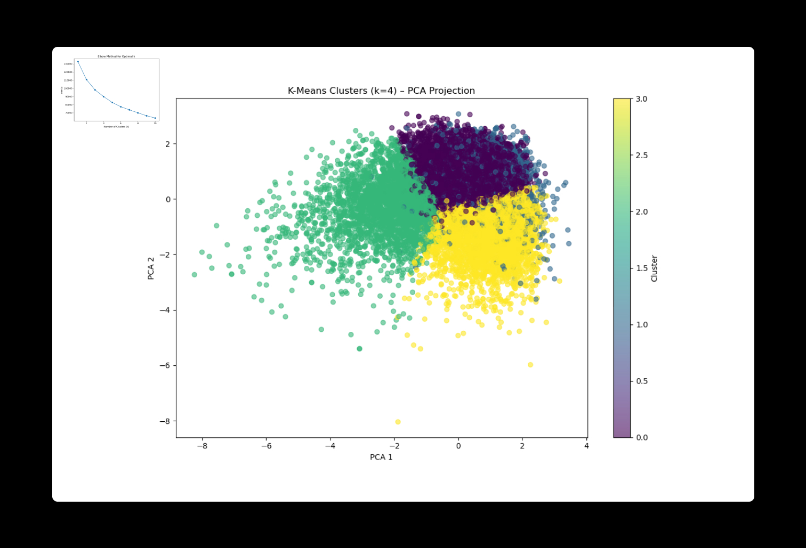
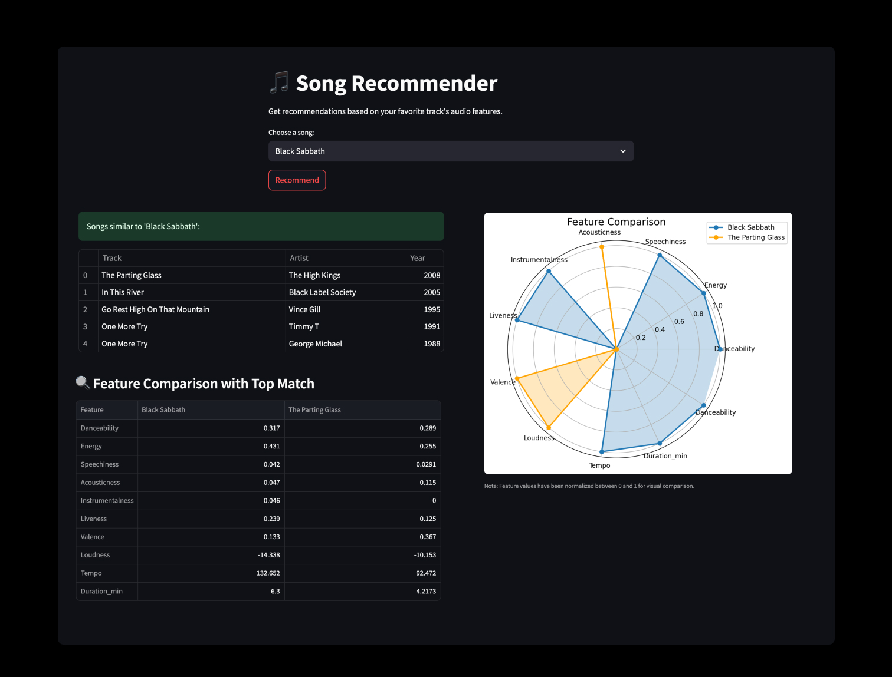

Songs Analysis w/ Spotify
Decoding the beats: a data-driven approach with
Spotify.
During my journey to learn more about machine learning and artificial intelligence, I was drawn to
exploring broader trends across
music history to understand what makes a song popular.
In this project, I set out to answer two
guiding questions:
What patterns emerge across musical features over time and genre?
Can we predict a song's popularity or recommend similar songs basedon these features?
I ended up building a Streamlit-powered music recommender system that compares songs using audio
features from
Spotify
data. Users can select a
favorite song to get smart, feature-based recommendations.
Dataset Overview & Analysis
The dataset I used was sourced from Kaggle,
originally collected using Spotify's
Web API. It includes 15,150 hit songs by 3,083 artists spanning over a century. Each song has audio
features that are added by Spotify.
Here are some insights I found from using the following methods:
Here are some insights I found from using the following methods:
Data Prep & Exploration
- Pop dominates in count and popularity, followed by Rock and Rap
- Popular tracks tend to be louder, more danceable, less acoustic
- Feature correlations with popularityare weak and nonlinear
Predictive Modeling
- Ran Regression (Random Forest, Ridge, Lasso) → Best R² ≈ 0.22
- Ran Classification (Random Forest, SVM, XGBoost) → Best F1 ≈ 0.39
- Models perform best for very popular songs, less accurate for mid-tier
Clustering & PCA
- Applied PCA to reduce dimensionality and visualize song space
- K-Means Clustering (k=4) revealed hidden acoustic groupings like:
- Mainstream pop: Loud, upbeat, high-valence
- Modern rap/EDM: High speechiness, very popular
- Acoustic/folk/jazz: Soft, niche, less popular
- Rock/metal: Loud, fast, mixed success

Visualizing Data Clusters with a Hexbin Plots
Overall, I found that no single audio feature can predict a song's popularity —
trends
are contextual, not absolute. But when
features are combined, they reveal meaningful patterns.

Reducing Dimensions to Reveal Patterns
Audio profiles are effective for clustering
and recommendations,
especially when analyzed across decades.
The sound of success evolves over time.

Building an Interactive Music Recommendation App
After exploring clustering and recommendation techniques, I developed a Streamlit app
that lets users select a song and
discover others with similar audio features. The app uses K-Means clustering to narrow the search and
cosine similarity
to find the closest matches. Users can compare songs through radar charts and tables.
One cool example: Black Sabbath was matched with The Parting Glass — not because they are the same genre, but because their sound features are alike.
One cool example: Black Sabbath was matched with The Parting Glass — not because they are the same genre, but because their sound features are alike.

What I learned
This project was definitely a challenge for me. I realized just how vast the
world of machine learning is and how much
the quality of your data impacts everything.
Still, I learned a lot along the way, and it's made me more excited to get more into advanced machine learning methods for future projects.
Still, I learned a lot along the way, and it's made me more excited to get more into advanced machine learning methods for future projects.